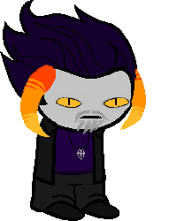
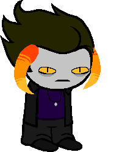

Thief of Doom
Full name: Volzii Zahkri
Trolltag/Chumhandle: dungeonMaster
Quirk: The quikk bROwn FOx jumps over the lazy dog. (Capitalizes words of power.)
Associated Colour: #N/A
Session: 2v2G
Dancestor: N/A
Modus: Encumberment Modus
(Every item is assigned a weight. Starting out, the player only has 300 weight. If the player insists on holding more than 300 weight, movement speed is decreased drastically.)
Strife Specibus: Knifekind
Server: N/A
Client: N/A
Matesprit: N/A
Kismisis: N/A
Morail: N/A
Auspistice: N/A
Land:
Your land is the LAND OF FROST AND WYRMS. It's basically SKYRIM.
Notes 1:
- Words Of Power:
Fus
Ro
Dah
Hun
Wuld
Yol
Joor
Krii
Laas
Od
Tiid
Strun
Fo
Mul
Kaan
Raan
Iiz
Dur
Zul
Rii
Su
Gaan
Faas
Zun
Mid
Gol
Ven
Notes 2: